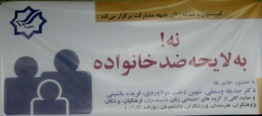
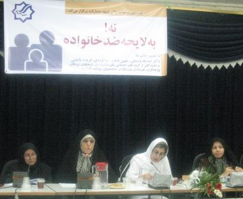
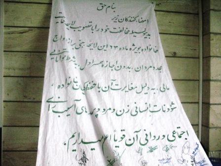
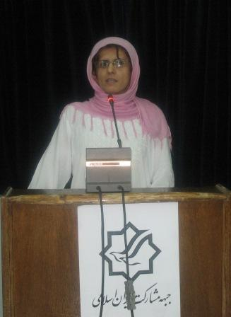

پذيرش > تریبون > تمام اقشار جامعه به اين لايحه معترض اند
 نشست "نه به لایحه ضد خانواده!" در حزب مشارکت: نشست "نه به لایحه ضد خانواده!" در حزب مشارکت:

 تمام اقشار جامعه به اين لايحه معترض اند تمام اقشار جامعه به اين لايحه معترض اند
17 مرداد 1387 - آیدا سعادت - نسخه قابل چاپ
تغییر برای برابری: دفتر حزب مشارکت اسلامی سه شنبه 15 مرداد با برگزاری نشست "نه به لایحه ضد خانواده!"، میزبان جمع کثیری از فعالان حقوق زنان، روزنامه نگاران، زنان ورزشکار، کارآفرین، خانه دار، فرهنگی و کارگر بود که در اعتراض به تصویب لایحه حمایت از خانواده در کمیسیون حقوقی وقضائی مجلس شورای اسلامی گرد هم آمدند.
در این نشست فریده ماشینی ، صدیقه وسمقی، شهیندخت مولاوردی و رزا قراچورلو لایحه را از منظر اجتماعی، فقهی و حقوقی تحلیل کرده و دلایل متعددی در نقد این لایحه اظهار داشتند.
در ادامه نشست نمایندگانی از زنان خانه دار، زنان ورزشکار معلمان کارگران و .. نیز به ایراد سخنرانی پرداختند.
همچنين طوماري در اعتراض به اين لايحه به امضاي حاضران رسيد؛ طوماري بر پارچه سفيد که قرار است به مجلس شوراي اسلامي ارسال شود

فريده ماشيني: فرادستي مردان و فرودستي زنان در لایحه حمایت از خانواده
"هرچند اين لايحه دغدغه و نگراني زيادي ايجاد کرده است، اما از سوي ديگر نشان داد زنان داراي مسائل مشترک هستند و همه از هر گرايش فکري گرد هم آمده اند و تلاش مي کنند تا صداي اعتراض خود را به اين لايحه اعلام کنند."
فريده ماشيني رئيس کميسيون زنان حزب مشارکت با بیان این مطلب در نشست اعتراض به لایحه حمایت از خانواده گفت:" مخالفت با اين لايحه صرفاً مخصوص زنان و مردان فعال در حوزه زنان نيست بلكه تمام اقشار نسبت به اين لايحه معترض هستند."
وی گفت: "فرادستي مردان و فرودستي زنان در جاي جاي اين لايحه ديده مي شود. هر آنچه که در لايحه پيشنهادي قوه قضائيه به نفع زنان بوده از سوي دولت حذف شده است و هرچيزي که به نفع مردان بوده از سوي دولت به اين لايحه اضافه شده است."
ماشيني افزود:"در لايحه دولت، ثبت ازدواج موقت غيرضروري شده است در حالي که اولين کساني که از اين ماده ضرر مي بينند مادراني هستند که از اين ازدواج ها داراي فرزند شده اند. ماده 23 اين لايحه هم هيچ حقي براي زنان به عنوان شريک يک زندگي مشترک در نظر نگرفته است و با تاکيد بر تمکن مالي مردان به عنوان تنها شرط اصلي ازدواج مجدد، زن را صرفاً نيازمند کمک مالي مردان دانسته است.»
رئيس کميسيون زنان حزب مشارکت ادامه داد:«اين ماده براي حل کدام مشکل اجتماعي نوشته شده است؟ مطالعات جامعه شناختي نشان مي دهد مرداني که قصد ازدواج دوم دارند، دنبال گزينه هايي مي گردند که براي رفع خلأهاي زندگي اول وي باشد و نه سرپرستي يک زن بي سرپرست و بچه هاي وي. از سوي ديگر استدلال مي آورند مردان متاهل از نظر نيازهاي جنسي تنوع طلب شده اند، آيا به واسطه چنين ارجحيتي است که اين ماده وضع مي شود؟ آيا تنوع طلبي جنسي مردان، دليل موجهي براي ازدواج هاي دوم و چندم است. به ويژه در شرايط کنوني و در جوامع فعلي امکان تامين امور چند خانواده توسط يک مرد بسيار دشوار است.»

اين فعال حقوق زنان ادامه داد؛ «در بحث مربوط به مهريه هم اگر بپذيريم که مهريه جزء يکي از موارد بسيار نادري است که با توجه به قانون تبعيض آميز در خانواده، شايد و فقط شايد به عنوان يک اهرم فشار براي مردان هوسران يا گرفتن طلاق براي زنان استفاده مي شود، بر همين اهرم هم ماليات گذاشته شده است، اما در اين لايحه از همين مورد هم نمي گذرند در حالي که بايد ديد ريشه بالا بودن مهريه هاي بالا در چيست؟ نداشتن حق مالکيت براي زنان از دارايي خانواده، کنترل مردانه بر سيستم خانوادگي، نداشتن پشتوانه اقتصادي، نداشتن سيستم اجتماعي براي حمايت از زنان جزء اين عوامل است و آيا نمي توان اين موارد را با قانونگذاري حل کرد تا مشکل مهريه هاي بالا حل شود.»
ماشيني افزود:"موضوعات مهمي در اين لايحه که نام حمايت از خانواده بر آن گذاشته شده مغفول مانده است، از جمله بحث اشتغال زنان، ازدواج زير سن قانوني، تابعيت مادري، حق طلاق براي زنان و... بي ترديد اين لايحه نه تنها فروپاشي خانواده ها را به دنبال خواهد داشت بلکه زنان جوان را نيز براي ازدواج بي انگيزه خواهد کرد چون ديگر زناني که از حداقل حقوق بهره مند هستند، با اين قانون ديگر اعتماد و تمايلي براي زندگي مشترک با مردي ندارند که به محض پولدار شدن يا داشتن تمکن مالي مي تواند به راحتي همسران ديگري اختيار کند."
صديقه وسمقي:مردان چند زنه؛ مدافعان این لایحه اند
صديقه وسمقي استاد فقه حقوق دانشگاه تهران سخنران بعدي اين نشست بود.وی با طرح این سوال که "بايد ديد چه جرياني پشت اين ماجرا است؟" گفت:" به نظر من دو گروه مدافع اين لايحه هستند؛ يکي مرداني که داراي چندهمسر هستند يا علاقه مند به چندهمسري هستند و مي خواهند با قانوني کردن اين مورد، راه را به خيال خود هموار کنند. گروه ديگر جرياني است که در کشور با آزادي و دموکراسي مخالف است.
عضو شوراي اول شهر تهران ادامه داد؛ «براي تنظيم لايحه يي که تمام شئون خانواده را نشانه گرفته است و به تبع آن بر تمام شئون اجتماعي ما تاثير مي گذارد، هيچ کار کارشناسي صورت نگرفته است هرچند از اين دولت اين روش بعيد نيست.»
وسمقي سپس به تحليل لايحه حمايت از خانواده از ديدگاه فقهي پرداخت:" پديده چندهمسري قبل از اسلام وجود داشته است و در ميان مردان در خاستگاه اسلام چندهمسري رايج بوده است و بسياري از مردان بيش از چهار همسر داشته اند. در آن دوران ضرورت هايي وجود داشته و زنان هويت مستقلي نداشتند و براي تهيه نان و آب و پوشش خود نيازمند مردان بودند و در اين شرايط عربستان اگر زني ازدواج نمي کرد يا شوهرش از بين مي رفت، ناني براي خوردن نداشت و مسلماً در اين شرايط براي زنده ماندن خود هم که شده به چندهمسري رضايت مي داد. اولين گام اسلام، محدود کردن چندهمسري بود و گفت نمي توانيد نامحدود زن داشته باشيد حداکثر چهارتا زن مي توانيد داشته باشيد و گام بعدي شرط عدالت است.
در حالي که اين قسمت از آيه براي استنباط حکم شرعي مهم تر است. بخش اول آيه فقط روايت مي کند و بعد مي گويد اگر مي ترسيد عدالت نداشته باشيد اين کار را نکنيد. يعني اگر از بي عدالتي در ازدواج هاي بعدي اطمينان داريد ازدواج مجدد حرام است. فقها بايد از اين قسمت از آيه درباره چندهمسري استفاده کنند. قرآن به اين بيان بهترين ساختار خانواده را تک همسري معرفي مي کند."

وي افزود:" استفاده از واژه شرع براي توجيه چندهمسري به شرط تمکن مالي در اين لايحه مغالطه است. اگر ما به خانواده، جايگاه زن و جايگاه فرزندان لطمه بزنيم اين ضرر متوجه تمام ارکان جامعه مي شود. ما يک قاعده شرعي، عقلي و حقوقي داريم که در همه جهان به آن توجه مي شود و آن اين است که نبايد هيچ قانوني وضع شود که به واسطه آن به افراد و جامعه ضرر وارد کنيم. مباني فکري، شرعي و حقوقي اين لايحه مورد مناقشه است و مجلس بايد به اين بحث ها بپردازد و مسلماً زنان که نيمي از جمعيت اين کشور هستند بايد بتوانند در اين لوايح اظهار نظر کنند.»
شهین دخت مولاوردی:لایحه حمایت از خانواده،بازگشت به 40 سال قبل
شهین دخت مولاوردی دیگر سخنران این نشست بود. وی لحن و ادبیات ماده 23 لایحه را رجعتی به 41 سال پیش دانست و گفت:" در قانون سال46 آمده بود که مرد برای ازدواج بعدی باید از زن اجازه بگیرد و دادگاه وقتی اجازه گرفتن همسر تازه را خواهد داد که اقدامات ضروری و تحقیق از زن فعلی را انجام دهد، اما در لایحه جدید وقعی به این موضوعات نهاده نشده است."
مولاوردی با اشاره به مغایرت تغییرات اعمال شده توسط دولت بر لایحه پیشنهادی قوه قضاییه با اصل 158 قانون اساسی، ادامه داد:"براساس این اصل تهیه لوایح قضایی از وظایف قوه قضاییه است و تصریح صریح شورای نگهبان است که دولت را از تصویب لوایح قضایی منع کرده و گفته است دولت می تواند عین لوایح قوه قضاییه را توسط وزیر دادگستری تقدیم مجلس کند. و این لایحه با اصل تفکیک قوا در قانون اساسی مغایرت دارد. چرا که قوه مجریه در وظایف قوه قضاییه مداخله کرده است."
وی با پرداختن به حذف و اضافات دولت در لایحه گفت:"دولت 3ماده دیگر به این لایحه اضافه کرده از جمله ماده 23. به نظر می آید قوه قضاییه در لایحه تنظیمی خود سهوا اشاره ای به تعدد زوجات نکرده و با ظرافت از کنار آن گذشته است اما دولت به عمد به آن پرداخته است."
ژیلا بنی یعقوب: ائتلاف گسترده فعالان حقوق زنان در اعتراض به لایحه
ژیلا بنی یعقوب به نمایندگی از روزنامه نگارانی که در روزهای اخیر با پوشش مطبوعاتی و خبری نقش مهمی در آگاهی رسانی موثر به اقشار مختلف جامعه داشته اند از ائتلاف گسترده فعالان حقوق زنان و روزنامه نگاران داخل و خارج از کشور خبر داد.

بنی یعقوب همچنین از راه اندازی وبلاگی تحت عنوان لایحه ضد زن خبر داد که کلیه اخبار ونوشته های انتقادی در خصوص لایحه در آن موجود است. او همچنین از اطلاع رسانی وسیع و نقدهای متعدد اخبار این موضوع در سایت های کانون زنان ایرانی، تغییر برای برابری، میدان زنان، مدرسه فمینیستی ، شبکه بین المللی همبستگی با مبارزات زنان ایرانی و همچنین وبلاگ ها و وبسایتهای کمپین یک میلیون امضا در داخل و خارج کشور سخن گفت و اضافه کرد :"فعالان حقوق زنان در هر حوزه و با هر دیدگاهی سعی دارند صدای اعتراض خود به لایحه زن ستیز و ضد خانواده را به گوش مردم و نمایندگان مجلس شورای اسلامی و مسئولان دولت و قوه قضائیه برسانند و تبعات تصویب چنین لایحه ای را به آنان گوشزد کنند."
فاطمه راکعی: اجازه نمی دهیم ما را ضمیمه خانواده کنند
فاطمه راکعی،نماینده مجلس ششم نیز با تاکید بر اینکه اجازه نمی دهیم به ما به دیده پارازیت نگاه کنند و هویت مستقل مارا نادیده بگیرند، گفت: " ما دارای هویت مستقل هستیم و اجازه نمی دهیم ما را ضمیمه خانواده کنند. "
وی ادامه داد:" کسی که شعار حمایت از خانواده می دهد با چه اجازه ای به خود حق می دهد خانواده را با تصویب چنین لایحه ای متلاشی کند. این عدالت است که مردان متمکن چند زن اختیار کنند اما مردان جوان نمی توانند ازدواج کنند؟"
رزاقراچورلو: لایحه در تضاد با تعهدات بین المللی است
در ادامه رزاقراچورلو، وکیل دادگستری تضاد این لایحه با تعهدات بین المللی را یادآور شد.وی گفت:" از نظر حقوق بشر زن و مرد برابرند و ایران در زمان سلسله پهلوی به میثاق حقوق بشر پیوسته ، اما اکنون که شکل حکومت عوض شده برخی می گویند ما ملزم به اجرای آنها نیستیم در حالی که کنوانسیون های مهم بشری با انقلاب با کودتا با جنگ و تغییرات رادیکال از بین نمی روند و تعهدات دولت ایران نسبت به میثاقین منشور سازمان ملل و اعلامیه حقوق بشر برجای خود باقی است .
ارسال به
بالاترین
،
توییتر
،
فریندفید
،
فیسبوک
در همين بخش :
 دهمین دورۀ مراسم تندیس صدیقه دولت آبادی ۱۳۹۲ دهمین دورۀ مراسم تندیس صدیقه دولت آبادی ۱۳۹۲
کارت پستالهایی به بهانهی هشت مارس و به یاد همهی مبارزین راه برابری
بیانیه بیش از 350 تن از مدافعان حقوق زنان به مناسبت روز جهانی زن؛ زنان هر روز فرودستتر میشوند
لباسی که برای تن ما دوخته اند! /اعظم بهرامی
چالشها و چشمانداز فعالیت مدنی زنان
ديگر بخش ها :
طرح یک میلیون امضا
|
مقالات
|
سایت نوشته ها
|
اخبار
|
گزارش كمپين
|
گفت و گو
|
علیه سکوت
|
كوچه به كوچه
|
نامه های شما
|
گزارش ویژه
|
گفتگو با اعضا
|
ویژه سالگرد کمپین
|
تصویر برابری
|
دل آرام علی
|
تریبون
|
مقالات
|
تاریخ شفاهی
|
خارج از چارچوب
|
کتابخانه
|
درباره کمپین
|
کمپین در شهرها
|
کمپین در بند
|
صدای تغییر
|
ویژه 22 خرداد
|
لایحه حمایت از خانواده
|
گالری
|
عشا مومنی
|
امیر یعقوبعلی
|
خدیجه مقدم
|
راحله عسگری زاده و نسیم خسروی
|
پروین اردلان،جلوه جواهری، مریم حسین خواه، ناهید کشاورز
|
زینب پیغمبرزاده
|
سعیده امین، سارا ایمانیان، محبوبه حسین زاده، ناهید کشاورز و همایون نامی
|
احترام شادفر
|
نسیم سرابندی زاده،فاطمه دهدشتی
|
وبلاگ مهمان
|
پرونده خرم آباد
|
دستگیری ها
|
مریم مالک
|
پرستو اللهیاری
|
مهرنوش اعتمادی
|
سمیه رشیدی
|
Other Languages
|
همراهان
|
«فراخوان کمپین ده روز با بهاره هدایت»
| English
|